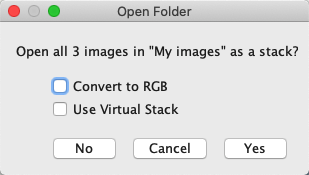
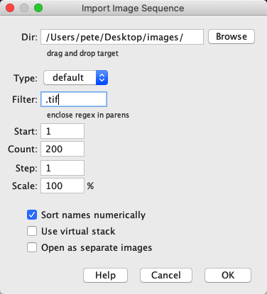
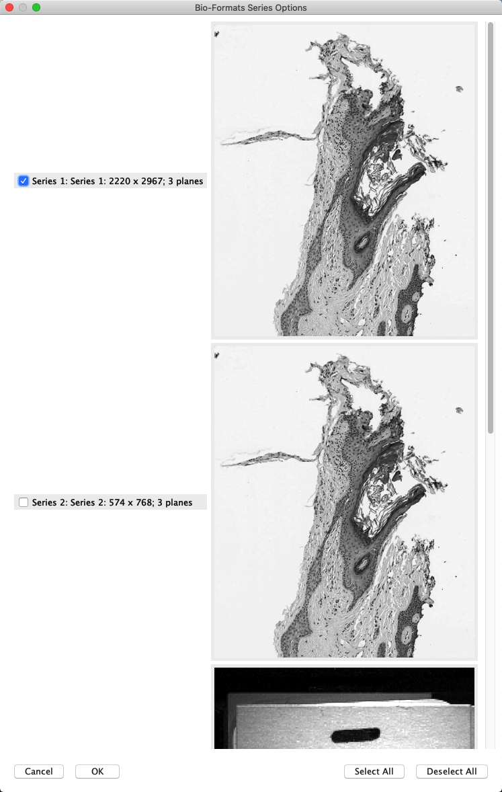

ImageJ: Files & file formats
Contents
ImageJ: Files & file formats¶
Introduction¶
On its own, ImageJ can read and write a range of common – and a few not-so-common – file formats. With Bio-Formats, it can handle a lot more.
This section describes some of the most useful file formats for bioimage analysis and how to work with them effectively in ImageJ, along with a few tricks that may help if files are causing you trouble.
File formats in ImageJ (only)¶
Opening images¶
As described in ImageJ: Images & pixels, the general approach to open an image is to drag the file on top of the ImageJ toolbar and hope for the best. Assuming ImageJ supports the file format, then it will usually just work.
One occasion when that might seem insufficient is whenever you have a large number of image files in the same folder, which really are different slices or time points of the same image. It’s possible to drag all these onto ImageJ’s toolbar at once, but they are likely to open as separate images. The trick is to drag the folder containing all the images onto the toolbar instead: you should then be invited to open the images together in a single image stack.
{kind=link}
This assumes that all the images in the folder should be opened. If you need more control, then can help. This gives a more extensive dialog, where (among other things) you can specify a filter, i.e. some text that should be present within the filenames of images to include.
{kind=link}
Virtual stacks for large images
Both the dialogs shown above to import multiple images give an intriguing Use Virtual Stack option. This causes ImageJ to only open the slice of the image stack that is currently being viewed. This can dramatically cut down memory requirements for large stacks, and make opening much faster.
The disadvantage of using a virtual stack is that it can make processing behave a bit oddly: seemingly ‘forgetting’ when a slice has been processed, or requesting that the full image is read into memory with prompts like the one below.

Still, virtual stacks are very handy if you want to peak into a large image without opening it all. If you don’t mind its limitations, you can also open an ImageJ TIFF as a virtual stack using .
Saving images for analysis¶
To save an image, might be all you ever need. This is ImageJ’s default format, and so preserves all the important information that it requires – including the pixel size. It even includes any active ROIs and overlays.
The main disadvantage with saving an ImageJ TIFF is that it’s uncompressed, and so the file size can quickly become quite large. One way to mitigate this is to choose .
Rather than being an entirely different format, a ZIP file saved by ImageJ is really just a TIFF that has been zipped up into a smaller file using lossless compression. You can probably unzip the file using the tools of your operating system to reveal the TIFF inside – but you don’t have to, because ImageJ can open the zip file directly.
ImageJ’s zip files are therefore good for archiving: they preserve all the same information as an ImageJ TIFF, but in a smaller file size. The cost is that reading and writing zip files can take quite a lot more time.
Apart from TIFF and ZIP, none of ImageJ’s other supported file formats are really to be recommended for analysis. Depending upon the original image, most will result in some kind of loss: for example through converting to RGB, discarding ROIs or dimensions, or applying some pixel-changing lossy compression.
Saving images for display¶
When it comes to saving an image to display, data loss may be tolerable – or even necessary. We care about appearance and compatibility, not exact pixel values.
ImageJ TIFF can also be used to save an image for display, but the large file sizes can be a problem. If you want to do it anyway, then it is often best to convert the image to RGB first.
Alternatively, I regularly use as my preferred option to save RGB images for display using lossless compression.
If file size is still an issue, and artefacts are acceptable, then can be used instead. The quality of the JPEG can be adjusted via : increasing the JPEG quality will give (slightly) larger files, but less obvious artefacts.

Using Bio-Formats¶
Bio-Formats is extremely useful when working with scientific images generally – and pretty much indispensable when it comes to microscopy. It provides support for reading a wide range of formats, and writing a somewhat smaller (but still important) range.
If you’re using the Fiji distribution of ImageJ, then you should have Bio-Formats installed by default. Otherwise, you’ll likely need to install bioformats_package.jar yourself. You can find it along with installation instructions at https://www.openmicroscopy.org/bio-formats/downloads/
Opening images¶
Once it’s installed, Bio-Formats can do much of its work without you needing to think about it: if ImageJ cannot open a file by drag & drop, then it will usually let Bio-Formats have a go. You can tell when that has happened because the familiar Bio-Formats Import Options dialog will pop up:

Sometimes – but not always – this is then followed by the Bio-Formats Series Options dialog. If the file contains multiple images, this gives an opportunity to select which images should be opened.
{kind=link}
Check out the import options
If you’re anything like me, and have been using ImageJ for a while, there’s a strong chance that the Bio-Formats import dialog has faded into the background noise of your life: something to be clicked away without another thought.
But it’s worth occasionally checking out the options in detail, and hovering your mouse on top to see the useful explanations about what each option actually means. Lurking within the checkboxes and drop-down menus are options to do things like automatically setting the brightness and contrast or display modes. If you find yourself doing these tasks each time you open an image anyway, changing the import defaults could make life a little easier.
Saving images¶
To save a file, you can use .
This is perhaps most useful if you want to save an OME-TIFF image. An OME-TIFF differs from a regular ImageJ TIFF in two main ways:
It stores a much more extensive collection of standardized metadata, as OME-XML
It provides options to compress the data inside the TIFF, using either lossless (e.g. LZW) or lossy (e.g. JPEG) compression
You may also find that it works better at preserving key metadata when you want to move an image to another software application.
Troubleshooting files¶
Sometimes you might get slightly unlucky: an image fails to open, even though it could be opened.
This can happen whenever ImageJ optimistically thinks it can open a file, gives it a shot, but fails with a error-emitting whimper. Pride presumably wounded, ImageJ never passes the file to Bio-Formats to try. If this happens, then you can call on to force the import to use Bio-Formats, in the hope it will have more success. I’ve had to do this on rare occasions with troublesome TIFFs.
At other times, you might be more unlucky: an image fails to open, and no amount of effort will get ImageJ to open it.
This could be because the file format itself is unsupported, or the image is corrupt. Assuming you have Bio-Formats installed, checking the list of supported formats is a good start for finding out if it even should work. If so, you could ask about it on the Scientific Community Forum – you’ll probably need to share the image though for anyone else to be able to investigate the problem.
However, before doing that you should consider whether you have a whole slide image – or other large pyramidal image – that just has too many pixels for ImageJ to open. In that case, you might see a rather cryptic error like the one below:

Although by no means obvious, this indicates that the image is too large. If this happens, you might want to try QuPath instead.
To get a feel for the importance of metadata, you can try opening an image in which it is completely absent. This is quite tricky, and requires some detective work (or some luck).
Try to open the file Besenfreunde.ids using Fiji – it depicts an odd, and as yet unexplained, scene that I passed on my way to work soon after arriving in Heidelberg. This file only contains pixel values, and no metadata. It can still be read using the command, but to do so you will need to figure out the necessary metadata and input the appropriate values.
The following points may help:
The file contains only a single image, and a single channel.
The dimensions (width and height) of the image are each a multiple of 100 pixels.
The data is in 8, 16 or 32-bit format (signed or unsigned).
There are no offsets or gaps included.
The total size of the file is 400 000 bytes.
Note: The option Little-endian byte order relates to whether the bytes of 16 or 32-bit images are arranged from the least-to-most significant, or most-to-least significant. Some types of computer prefer one order, some prefer another, so this is something else the metadata should contain. The difference is similar to how a perfectly respectable number like twenty-three is (quite ludicrously, in my view) spoken as three-and-twenty in German.
The file size gives you the $\( \textrm{File size (in bytes)} = \frac{\textrm{width} \times \textrm{height} \times \textrm{bit-depth}}{8} \)$ where the division by 8 converts the total number of bits to bytes (since 8 bits make 1 byte). This can be used to make reasonable starting estimates for the width, height and bit-depth, but figuring out which are correct likely still requires some trial-and-error. In the end, the settings you need are:
Image type: 16-bit unsigned
Width: 500 pixels
Height: 400 pixels
Little-endian byte order: False
Using these values in the import should result in a reasonable image.
Now make sure never to lose your metadata, and you do not need to solve such puzzles often in real life. (Also, any explanations for what exactly was going on in that scene would be welcome.)